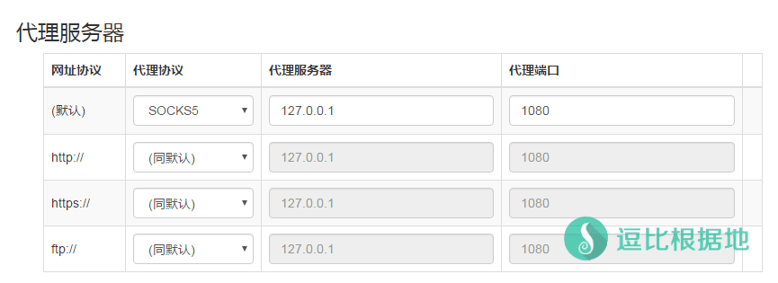
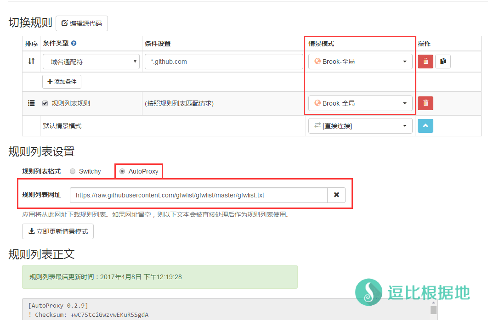
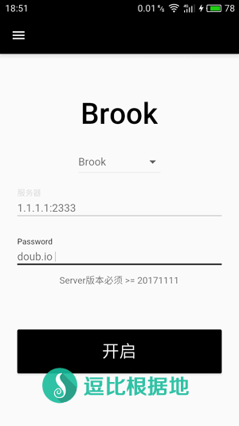

Brook是一个由 Go语言编写的跨平台代理软件，支持 Linux/MacOS/Windows/Android/iOS 各个平台。
同时因为 Go语言的特性，在操作使用上非常简单，本篇主要介绍 Brook客户端中 Windows/Android的使用方法（其他系统，没有设备）。
Brook Github项目：https://github.com/txthinking/brook
Github Wiki教程：https://github.com/txthinking/brook/wiki/使用说明(中文)
Brook 服务端教程：https://doub.io/brook-jc1/
Brook 服务端脚本：『原创』一个优秀的跨平台 Socks5代理软件 —— Brook 一键安装管理脚本
觉得官方客户端不好用？来试试我写的客户端吧：『原创』更方便的Windows系统 Brook 客户端 —— Brook Tools
其他 Brook 教程请看：https://doub.io/tag/brook/
下载客户端
Github下载地址：https://github.com/txthinking/brook/releases
逗比云 下载地址：https://softsmirror.cf/?dir=科学上网/PC/Brook
- Linux 64位客户端：brook（客户端+服务端）
- Linux 32位客户端：brook_linux_386（客户端+服务端）
- Windows 64位客户端：Brook.Setup.exe
- MacOS 64位客户端：Brook.dmg
- Android客户端： - Brook.apk - 逗比云
- IOS客户端：APPStore
注意：Windows系统要求 >= 7，Mac系统要求 >= 10.12，Android系统要求 >= 5.0，IOS系统要求 >= 9.0
Windows客户端 使用方法
点击展开 查看更多
下载客户端并运行后，会提示你安装 Brook 按照提示安装即可。
安装完后，一般情况下会自动启动 Brook 客户端，启动后会看到如下图：
然后根据服务端设置的 模式/端口/密码 来填写客户端设置（注意服务端的协议模式是 新版Brook 还是 旧版Stream Brook），填写后点击 SAVE 按钮保存即可。
有兴趣可以先用 我分享的免费 Brook 账号试试。

同时托盘图标右下角托盘图标也会有一个黑色的钥匙：
- Toggle 代表启动/停止 Brook 代理。
- Setting 则会打开设置窗口，也就是上面图片配置账号的窗口。

填写完 Brook 账号信息后，直接点击 Toggle 选项就会自动设置系统代理了。如果你没有用任何 代理扩展，那么就直接可以直接访问谷歌测试了，不过我更建议使用 代理扩展来控制，更方便一些。
注意：如果你要更换Brook账号，那么需要去控制页面修改账号信息并点击 SAVE 按钮保存，然后右键托盘图标点击 Toggle 才行！
注意：Brook客户端的本地监听端口是 1080 ，这意味着和 Shadowsocks/ShadowsocksR客户端默认的本地监听端口是冲突的，所以请修改Shadowsocks/ShadowsocksR的客户端默认本地端口，或者同一时间只运行一种客户端。
Brook 客户端设置说明
在 Brook 客户端的设置窗口中，点击左上角的 三个横杠，就会看到如下图：

- Server 代表的是配置账号。
- Advanced 代表的是客户端配置。
我们点击 Advanced 按钮，就会看到如下图：
各个选项的意思我都翻译写到图片里了，大家自己看，修改后记得点击 SAVE 按钮保存（如果是修改了代理相关设置，那么可能还需要点击托盘菜单的 Toggle 选项重新启动代理）。

代理扩展控制(可选)
点击展开 查看更多
这里建议使用 SwitchyOmega 扩展（点击查看新手使用教程） 来管理代理。
安装扩展后，打开扩展的选项页面，然后新建情景模式，分别添加一个全局和PAC的情景模式。
全局 情景模式：
新建情景模式，名称随意（例如 Brook-全局），类型选择 代理服务器
然后设置代理协议为 SOCKS5 ，代理服务器为 127.0.0.1 ，代理端口为 1080
然后点击页面左下角的 应用选项 即可。
自动切换(PAC)情景模式：
新建情景模式，名称随意（例如 Brook-PAC），类型选择 自动切换模式
然后在规则列表设置中 规则列表格式选择 AutoProxy，
规则列表网址为 https://raw.githubusercontent.com/gfwlist/gfwlist/master/gfwlist.txt
同时切换规则中，按照规则列表匹配请求的情景模式选择上面设置过的 Brook-全局 情景模式。
然后点击 立即更新情景模式 按钮，然后点击页面左下角的 应用选项 即可。
这时候在浏览器右上角，点击这个扩展的按钮(圆圈)，根据需求选择 Brook-PAC或 Brook-全局，然后打开谷歌：www.google.com 测试一下吧！


Android客户端 使用方法
点击展开 查看更多
Android和IOS 客户端的使用方法类似，而且我没有IOS设备，只能写 Android客户端使用方法喽。
下载客户端并安装运行后，界面很简单。
然后根据服务端设置的 混淆协议模式/端口/密码 来填写客户端设置，填写后点击 Start 按钮启动即可。
Brook安卓客户端和Shadowsocks/ShadowsocksR客户端一样，都是把代理转成 VPN，所以一开始会提示创建VPN 选择信任并确定即可。
不过Brook安卓客户端支持PAC分流。
注意：服务器地址栏填写格式为：IP:端口，例如下图中的 1.1.1.1:2333 ，不要忘记写端口号偶！


转载请超链接注明：逗比根据地 » Brook代理 Windows/Android版客户端简单使用教程
责任声明：本站一切资源仅用作交流学习，请勿用作商业或违法行为！如造成任何后果，本站概不负责！


不过为了避免DNS污染，DNS解析应该还是要通过代理服务器来完成的，win客户端没问题可能是 win客户端做了白名单？把国内常见域名都默认走本地设备DNS解析吧。
你的账号和我分享的免费账号，PC客户端都能使用，而20180707版本无法使用？
2. 下载 brook 客户端后，命令行进入 brook 客户端目录并运行以下代码：
部分电脑账号自检不可用？先校对这个电脑的系统时间与服务器的系统时间是否一致，不一致会导致无法建立连接。
另外再启动代理后，电脑CMD执行命令：netstat -aon|findstr 2080 看看是否有文字输出，如果没有反应说明 Brook 监听本地端口失败，2080是 Brook Tools 默认的本地端口。
不过根据你提供的信息，估计官方客户端你用不了是因为系统代理设置的问题，你需要检查系统代理设置或浏览器代理设置。
另外，Brook Tools 里面的直连模式是指的不配置系统代理，这个选项是用来 初始化系统代理设置 或者 你自己设置系统代理设置 或者 用浏览器扩展管理代理 用的。
该软件的 直连模式 PAC模式 全局模式和SSR PC客户端的是一个意思，为了方便你们理解，我才照着SSR客户端里选项做的。
启动代理后，CMD输入
netstat -aon|findstr 2080回车看看，这是看PC本地监听端口情况，是否有 2080 的端口监听。